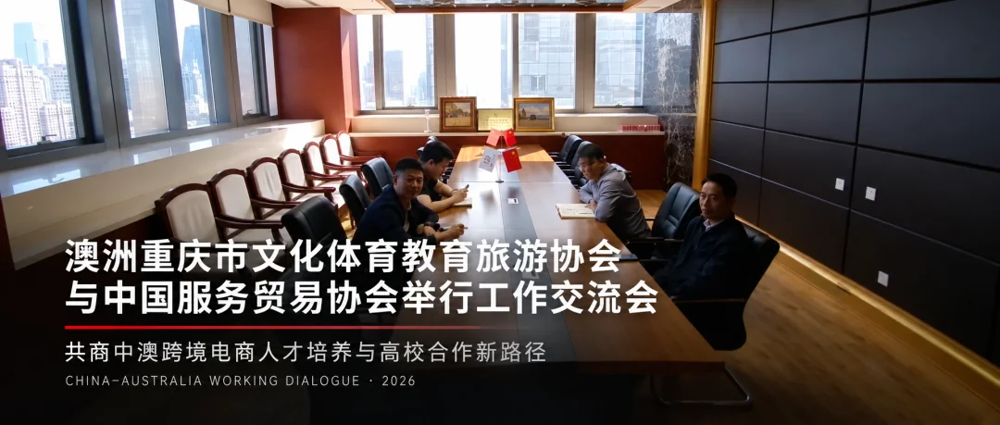

澳洲重庆市文化体育教育旅游协会与中国服务贸易协会举行工作交流会
澳洲重庆市文化体育教育旅游协会秘书处
新 闻 稿
澳洲重庆市文化体育教育旅游协会与中国服务贸易协会举行工作交流会
共商中澳跨境电商人才培养与高校合作新路径
2026年9月15日，澳洲重庆市文化体育教育旅游协会与中国服务贸易协会举行线上工作交流会。双方围绕中澳跨境电商人才培养、课程共建、高校合作及服务贸易资源对接等议题进行沟通，并就筹备9月底专题圆桌会议达成初步共识。
中国服务贸易协会工会主席、副秘书长李俊，国际部部长曹晔军，国际部干事于雨濠，会员会展部主任包欢；澳洲重庆市文化体育教育旅游协会会长黄欣悦及双方相关负责人出席会议。
会议伊始，双方分别介绍了参会人员及各自在服务贸易、国际交流、教育合作与企业出海服务等领域的工作基础。此次会议以相互了解和前期筹备为主，为后续建立常态化沟通机制、推进具体合作奠定基础。
会上，中国服务贸易协会介绍了其在跨境电商人才培养、课程体系建设、产教融合及国际合作等方面的实践经验。双方认为，跨境电商人才培养应结合不同国家的教育体系、产业环境和市场需求，在课程内容、实践方式及合作对象等方面进行有针对性的设计，推动教育资源与真实产业需求形成连接。
澳洲重庆市文化体育教育旅游协会介绍了澳大利亚高校、国际教育及企业国际化服务等方面的相关情况。协会表示，中澳在跨境电商、数字营销、国际贸易及青年人才培养领域具有较大的合作空间，未来可充分发挥协会在澳洲本地高校、教育机构和政商资源方面的桥梁作用，协助推动中国成熟课程、产业经验与澳大利亚教育及市场需求进行有效衔接。
会议还就中澳服务贸易资源梳理、专业展会及行业论坛信息共享、企业出海需求对接等方向交换了意见。未来，双方将根据澳大利亚市场需求，探索以跨境电商为首个切入点，逐步拓展数字贸易、文化旅游及其他服务贸易领域的交流合作。
此次会议进一步加深了双方的相互了解，也标志着中澳跨境电商教育合作与服务贸易资源对接进入前期筹备阶段。下一步，澳洲重庆市文化体育教育旅游协会将继续发挥连接中国与澳大利亚的民间桥梁作用，与中国服务贸易协会共同推动教育、产业与国际市场之间形成更具持续性和实践价值的合作网络。
澳洲重庆市文化体育教育旅游协会秘书处
2026年9月15日
